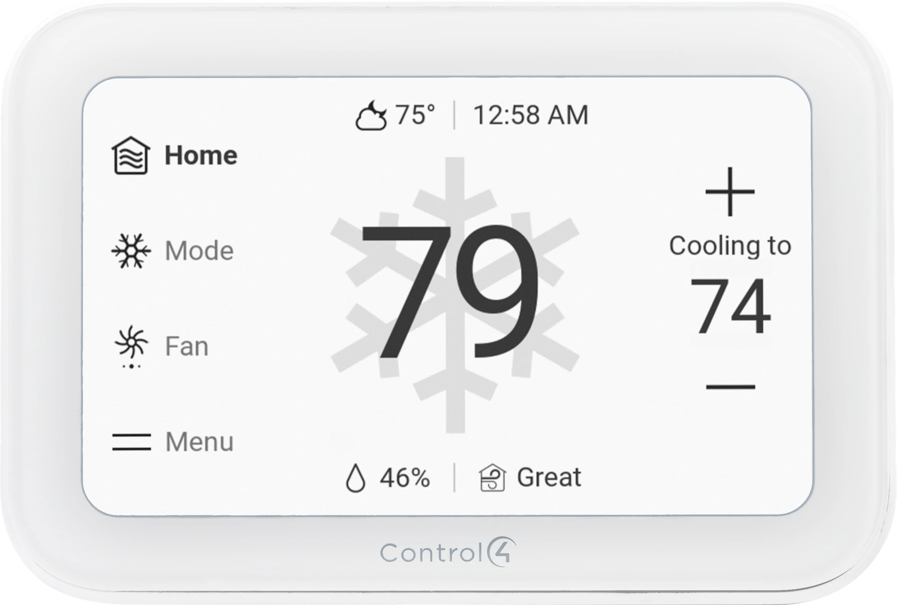
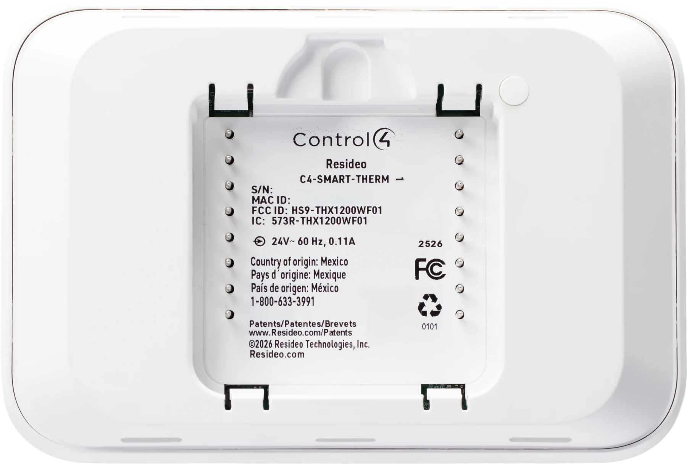

A new look for everyday comfort.
The new Control4 Smart Thermostat brings a touchscreen design to the wall. Here is a closer look at the product—and what matters before changing the controls your home already relies on.

The short answer: this is a new touchscreen model, not the older button-operated Control4 thermostat. Its documented features make it worth a look, but a thermostat upgrade should start with your heating and cooling equipment—not just the appearance of the screen.
In this guide
What sits behind the screen?
The front shows the controls you use every day. The rear shows a different part of the product: its recessed center, identification label and contact pins.

Replacing an existing thermostat? The installer still needs to check the wall base, wiring, wall opening and exact equipment compatibility. A rear product photo cannot establish that it will fit the old mounting or use the same connections. There is no need to remove your current thermostat to compare its appearance.
Both product photos retain the full manufacturer framing, without cropping. Tap either image to inspect it at a larger size. They are not photographs of a Denali Tech installation or a hands-on performance test; actual screen content can vary with configuration and software.
What is documented so far?
The official ENERGY STAR record for Control4 Smart Thermostat, model C4-SMART-THERM, lists the following features. That record is useful confirmation of the product family; it is not an installation manual or a list of everything available through Control4.
- A 5-inch capacitive touchscreen and Wi-Fi
- A larger touch interface is part of the new design. The connection method does not establish HVAC compatibility, power requirements or which functions work during an internet outage.
- Humidity, occupancy and air-quality sensing
- The record lists humidity sensing, an on-device occupancy sensor and a VOC air-quality sensor. A reading does not mean the thermostat can operate every humidifier or ventilation system. An air-quality indicator is not a substitute for a smoke or carbon-monoxide alarm.
- Doorbell camera streaming
- Streaming is listed as a feature, but the record does not name supported doorbells or describe calling and recording behavior. Confirm the exact combination before choosing it for that purpose; do not assume Chime Pro compatibility from the feature name alone.
- ENERGY STAR certification
- The listed model is certified. That does not guarantee a particular reduction in your utility bill, a local rebate or a payback period for your home.
Model naming matters: the certification uses C4-SMART-THERM; the ADI studio assets use C4-SMART-THERM-U. Confirm the supplied model and its current documentation before ordering. Features listed for the family are not a promise that every function is exposed in every Control4 project.
Will it fit your home?
A good-looking thermostat is only a good upgrade if it preserves the way your heating and cooling system needs to run. Before committing, have the HVAC contractor and Control4 dealer confirm these points together.
- Your exact equipment. Identify the furnace, heat pump, air handler, boiler and any zone panel. Ask for a compatibility check against the new thermostat's installation documentation, including staging and accessories.
- The existing wiring and power. Do not assume a matching wire color, familiar terminal label or similar wall plate proves it is a direct replacement. Wiring requirements need to be checked for the exact model.
- The Control4 project. Confirm the controller, supported software, driver and account requirements. A new screen alone does not establish support for an older system.
- The functions you actually use. Review schedules, temporary holds, fan behavior and any humidity controls. Ask which functions are available at the wall and which are available through your Control4 interfaces.
- The installation details. Check the wall opening, any marks left by the old unit, viewing height and access for future service. Confirm availability, accessories and total installed cost before scheduling.
Already have a communicating HVAC system? Do not replace its manufacturer controller just to match the other wall controls. Ask whether a supported integration can retain the equipment's intended operation instead. Our whole-home climate planning guide explains the broader thermostat-versus-gateway decision.
Upgrade for a reason. Keep what works.
Worth exploring when…
You want a clearer wall interface, are already planning compatible climate work, or have a specific use for the documented sensing features. Ask to see the functions that matter to your household before making the decision.
No need to rush when…
Your existing thermostat is dependable and easy to use. A cold room, noisy system or uneven comfort may need an HVAC assessment rather than a different screen. Replacing a working thermostat is not a requirement just because a newer design exists.
If you upgrade, make the handoff practical: show everyone how to change the temperature, cancel a temporary hold and recognize a schedule. Have the installer explain what remains available when Wi-Fi, internet access or the Control4 controller is unavailable. Those are separate conditions and should not be treated as the same outage.
Before you decide
Is this the same as the older Control4 Aprilaire thermostat?
No. This guide shows the new C4-SMART-THERM-U studio design and cites the C4-SMART-THERM family certification. Do not carry over wiring diagrams, accessories or compatibility claims from the older button-operated model.
Can I order it as a direct replacement?
Have the exact model, availability and installation requirements confirmed first. This first look does not verify a drop-in replacement, a shipping date, an installed price or a minimum Control4 software version.
Have you tested it in a home?
This is a source-based first look, not a hands-on review. The product photographs are official marketing images. We have not independently measured sensing accuracy, app behavior or reliability for this article.
Start with the comfort you want
Tell us what you want to improve and which thermostat you have now. For homes in Mount Prospect, Chicago and the surrounding service area, Denali Tech can review the Control4 side and coordinate compatibility questions with your HVAC contractor.
Discuss my climate controlsSources and image credits
Technical sources reviewed October 19, 2026; rear-view imagery added October 20, 2026. This first look separates publicly documented family features from project-specific compatibility. It does not use the older Aprilaire product page as evidence for the new model.
- EPA ENERGY STAR: Resideo Control4 Smart Thermostat, C4-SMART-THERM, record 4682834. Source for the listed display, connectivity, sensing, streaming and certification details—not a wiring or integration guide.
- Official Control4 / ADI Marketing Materials studio images: front and rear, labeled C4-SMART-THERM-U. Accessed through the dealer marketing library. Full framing and transparency are retained; images are proportionally downsized for the web. Library access may be required.